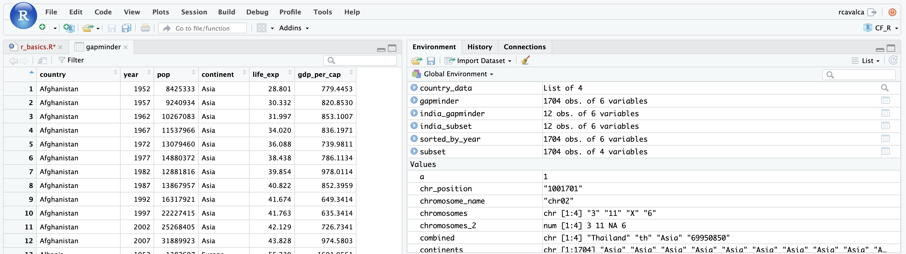
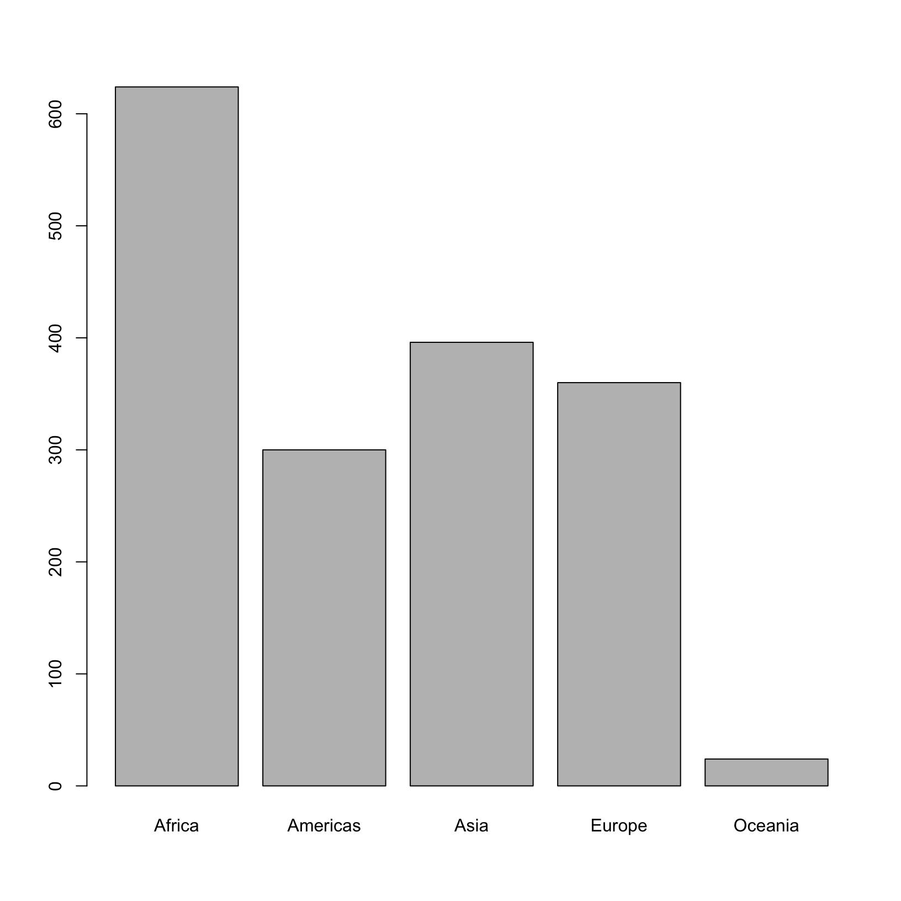
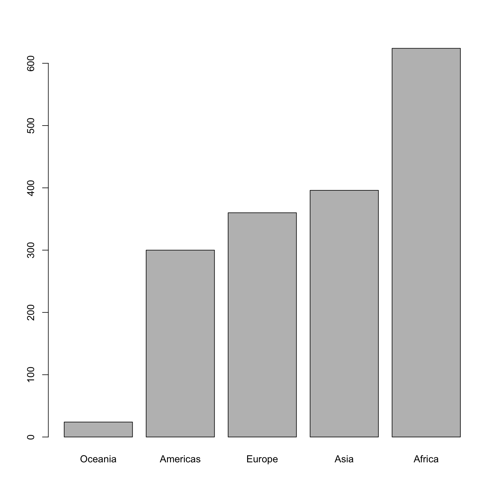

A substantial amount of data is tabular, that is data arranged in rows and columns - also known as spreadsheets. We could write a whole lesson on how to work with spreadsheets effectively (actually, Data Carpentry has). For our purposes, we want to remind you of a few principles before we work with our first set of example data:
1) Keep raw data separate from analyzed data
This is principle number one because if you can’t tell which files are the original raw data, you risk making some serious mistakes (e.g. drawing conclusion from data which have been manipulated in some unknown way).
2) Keep spreadsheet data Tidy
The simplest principle of Tidy data is that we have one row in our spreadsheet for each observation or sample, and one column for every variable that we measure or report on. As simple as this sounds, it’s very easily violated. Most data scientists agree that significant amounts of their time is spent tidying data for analysis. Read more about data organization in this lesson and in this paper.
3) Trust but verify
Finally, while you don’t need to be paranoid about data, you should have a plan for how you will prepare it for analysis. This a focus of this lesson. You probably already have a lot of intuition, expectations, assumptions about your data - the range of values you expect, how many values should have been recorded, etc. Of course, as the data get larger our human ability to keep track will start to fail (and yes, it can fail for small data sets too). R will help you to examine your data so that you can have greater confidence in your analysis, and its reproducibility.
Tip: Keep raw data separate
When you work with data in R, you are not changing the original file you loaded that data from. This is different than (for example) working with a spreadsheet program where changing the value of the cell leaves you one “save”-click away from overwriting the original file. You have to purposely use a writing function (e.g.
write.csv()) to save data loaded into R. In that case, be sure to save the manipulated data into a new file. More on this later in the lesson.
There are several ways to import data into R. For our purpose here,
we will focus on using the tools every R installation comes with (so
called “base” R) to import a comma-delimited file containing the results
of our variant calling workflow. We will need to load the sheet using a
function called read.csv().
Exercise: Review the arguments of the
read.csv()functionBefore using the
read.csv()function, use R’s help feature to answer the following questions.Hint: Entering ‘?’ before the function name and then running that line will bring up the help documentation. Also, when reading this particular help be careful to pay attention to the ‘read.csv’ expression under the ‘Usage’ heading. Other answers will be in the ‘Arguments’ heading.
- What is the default parameter for ‘header’ in the
read.csv()function?- What argument would you have to change to read a file that was delimited by semicolons (;) rather than commas?
- What argument would you have to change to read file in which numbers used commas for decimal separation (i.e. 1,00)?
- What argument would you have to change to read in only the first 10,000 rows of a very large file?
read.csv() function has the argument ‘header’ set
to TRUE by default, this means the function always assumes the first row
is header information, (i.e. column names)read.csv() function has the argument ‘sep’ set to
“,”. This means the function assumes commas are used as delimiters, as
you would expect. Changing this parameter (e.g. sep=";")
would now interpret semicolons as delimiters.read.csv() usage,
read.csv() is a “version” of the function
read.table() and accepts all its arguments. If you set
dec="," you could change the decimal operator. We’d
probably assume the delimiter is some other character.nrow to a numeric value
(e.g. nrow=10000) to choose how many rows of a file you
read in. This may be useful for very large files where not all the data
is needed to test some data cleaning steps you are applying.Now, let’s read in the file data/gapminder_data.csv
which will be located in
/home/workshop/user/CF_R/data/gapminder_data.csv. Call this
data gapminder. The first argument to pass to our
read.csv() function is the file path for our data. The file
path must be in quotes and now is a good time to remember to use tab
autocompletion. If you use tab autocompletion you avoid typos
and errors in file paths. Use it!
## read in a CSV file and save it as 'gapminder'
gapminder <- read.csv("data/gapminder_data.csv")One of the first things you should notice is that in the Environment
window, you have the gapminder object, listed as 1704 obs.
(observations/rows) of 6 variables (columns). Double-clicking on the
name of the object will open a view of the data in a new tab.

A data frame is the standard way in R to store tabular data. A data fame could also be thought of as a collection of vectors, all of which have the same length. Using only two functions, we can learn a lot about out data frame including some summary statistics as well as well as the “structure” of the data frame. Let’s examine what each of these functions can tell us:
## get summary statistics on a data frame
summary(gapminder) country year pop continent
Length:1704 Min. :1952 Min. :6.001e+04 Length:1704
Class :character 1st Qu.:1966 1st Qu.:2.794e+06 Class :character
Mode :character Median :1980 Median :7.024e+06 Mode :character
Mean :1980 Mean :2.960e+07
3rd Qu.:1993 3rd Qu.:1.959e+07
Max. :2007 Max. :1.319e+09
lifeExp gdpPercap
Min. :23.60 Min. : 241.2
1st Qu.:48.20 1st Qu.: 1202.1
Median :60.71 Median : 3531.8
Mean :59.47 Mean : 7215.3
3rd Qu.:70.85 3rd Qu.: 9325.5
Max. :82.60 Max. :113523.1 Our data frame has 6 variables, so we get 6 fields that summarize the
data. The year, pop, lifeExp and
gdpPercap variables are numerical data and so you get
summary statistics on the min and max values for these columns, as well
as mean, median, and interquartile ranges. The other variables,
country and continent, are treated as
characters data (more on this in a bit).
Now let’s use the str() (structure) function to look a
little more closely at how data frames work:
## get the structure of a data frame
str(gapminder)'data.frame': 1704 obs. of 6 variables:
$ country : chr "Afghanistan" "Afghanistan" "Afghanistan" "Afghanistan" ...
$ year : int 1952 1957 1962 1967 1972 1977 1982 1987 1992 1997 ...
$ pop : num 8425333 9240934 10267083 11537966 13079460 ...
$ continent: chr "Asia" "Asia" "Asia" "Asia" ...
$ lifeExp : num 28.8 30.3 32 34 36.1 ...
$ gdpPercap: num 779 821 853 836 740 ...Some things to notice.
data.frame is displayed in the first
row along with its dimensions, in this case 1704 observations (rows) and
6 variables (columns)country). This
is followed by the object mode (e.g. chr, int, etc.). Notice that before
each variable name there is a $ - this will be important
later.Factors are the final major data structure we will introduce in our R lessons. Factors can be thought of as vectors which are specialized for categorical data. Given R’s specialization for statistics, this make sense since categorial and continuous variables are usually treated differently. Sometimes you may want to have data treated as a factor, but in other cases, this may be undesirable.
Let’s see the value of treating variables, some of which are categorical in nature, as factors. Let’s take a look at just the continents.
## extract the "continent" column to a new object
continents <- gapminder$continentNotice the use of the $, which corresponds to the output
of str() above. Let’s take a look at continents and see
what we get:
head(continents, 30) [1] "Asia" "Asia" "Asia" "Asia" "Asia" "Asia" "Asia" "Asia"
[9] "Asia" "Asia" "Asia" "Asia" "Europe" "Europe" "Europe" "Europe"
[17] "Europe" "Europe" "Europe" "Europe" "Europe" "Europe" "Europe" "Europe"
[25] "Africa" "Africa" "Africa" "Africa" "Africa" "Africa"There are 1704 continents (one for each row), and it looks like a lot of them are repeated. Let’s determine what the unique values are.
unique(continents)[1] "Asia" "Europe" "Africa" "Americas" "Oceania" This leaves us with just 5 continents. Right now, they are being
treated as characters, but we could treat them as categories (after all,
the number and names of the continents is fixed, for the time being).
Doing this will have some nice downstream effects. Let’s try to generate
a plot of the continents character vector as it is right
now:
plot(continents)Warning in xy.coords(x, y, xlabel, ylabel, log): NAs introduced by coercionWarning in min(x): no non-missing arguments to min; returning InfWarning in max(x): no non-missing arguments to max; returning -InfError in plot.window(...): need finite 'ylim' valuesNope! Though the plot() function will do its best to
give us a quick plot, it is unable to do so here. One way to fix this it
to tell R to treat the continents as categories (i.e. a factor vector);
we will create a new object to avoid confusion using the
factor() function:
factor_continents <- factor(continents)Let’s learn a little more about this new type of vector:
str(factor_continents) Factor w/ 5 levels "Africa","Americas",..: 3 3 3 3 3 3 3 3 3 3 ...The categories (“Africa”, “Americas”, etc.) of the factor are returned; these are called “Levels”. Levels are the different categories contained in a factor. By default, R will organize the levels in a factor in alphabetical order. So the first level in this factor is “Africa”.
For the sake of efficiency, R stores the content of a factor as a vector of integers, where an integer is assigned to each of the possible levels. We can see that by the output:
Factor w/ 5 levels "Africa","Americas",..: 3 3 3 3 3 3 3 3 3 3 ...But why does str() display 3 repeated? Let’s take a look
at the head of factor_continents:
head(factor_continents)[1] Asia Asia Asia Asia Asia Asia
Levels: Africa Americas Asia Europe OceaniaWe see repeated values of “Asia”. Notice the levels of the factor are also displayed, and “Asia” is the third in the list, hence the 3.
We can see how many items in our vector are in each category:
summary(factor_continents) Africa Americas Asia Europe Oceania
624 300 396 360 24 As you can imagine, this is useful when you want to generate a tally.
Tip: treating objects as categories without changing their mode
You don’t have to make an object a factor to get the benefits of treating an object as a factor. See what happens when you use the
as.factor()function oncontinents. To generate a tally, you can sometimes also use thetable()function; though sometimes you may need to combine both (i.e.table(as.factor(object)))
One of the most common uses for factors will be when you plot categorical values. For example, suppose we want to know how many of our gapminder had each possible SNP we could generate a plot:
plot(factor_continents)
This isn’t a particularly spectacular example of a plot but it works,
and it recapitulates the table from summary(). We’ll be
learning much more about creating nice, publication-quality graphics
later in the workshop.
If you recall, factors are ordered alphabetically. That might make sense, but some categories (e.g., “red”, “blue”, “green”) often do not have an intrinsic order. What if we wanted to order our plot according to the numerical value (i.e., in ascending order of continent frequency)? We can enforce an order on our factors:
ordered_factor_continents <- factor(factor_continents, levels = names(sort(table(factor_continents))))
# And let's quickly look at the result
head(ordered_factor_continents, 20) [1] Asia Asia Asia Asia Asia Asia Asia Asia Asia Asia
[11] Asia Asia Europe Europe Europe Europe Europe Europe Europe Europe
Levels: Oceania Americas Europe Asia AfricaNotice here that the order of the elements in the factor didn’t change, but the order of the levels did.
Let’s deconstruct this from the inside out (you can try each of these commands to see why this works):
factor_continents to get the
frequency of each continent: table(factor_continents)sort(table(factor_continents)); use
the decreasing = parameter for this function if you wanted
to change from the default of FALSEnames function gives us just the character
names of the table sorted by
frequencies:names(sort(table(factor_continents)))factor function is what allows us to create a
factor. We give it the factor_continents object as input,
and use the levels= parameter to enforce the ordering of
the levels.Now we see our plot has be reordered:
plot(ordered_factor_continents)
Factors come in handy in many places when using R. Even using more sophisticated plotting packages such as ggplot2 will sometimes require you to understand how to manipulate factors.
Next, we are going to talk about how you can get specific values from data frames, and where necessary, change the mode of a column of values.
The first thing to remember is that a data frame is two-dimensional
(rows and columns). Therefore, to select a specific value we will will
once again use [] (bracket) notation, but we will specify
more than one value (except in some cases where we are taking a
range).
Exercise: Subsetting a data frame
Try the following indices and functions and try to figure out what they return.
gapminder[1,1]gapminder[2,4]gapminder[801,29]gapminder[2, ]gapminder[-1, ]gapminder[1:4,1]gapminder[1:10, c("country","continent")]gapminder[,c("country")]head(gapminder)tail(gapminder)gapminder$countrygapminder[gapminder$country == "Italy",]
gapminder[1,1][1] "Afghanistan"gapminder[2,4][1] "Asia"gapminder[801,4][1] "Asia"gapminder[2, ] country year pop continent lifeExp gdpPercap
2 Afghanistan 1957 9240934 Asia 30.332 820.853gapminder[-1, ] country year pop continent lifeExp gdpPercap
2 Afghanistan 1957 9240934 Asia 30.332 820.8530
3 Afghanistan 1962 10267083 Asia 31.997 853.1007
4 Afghanistan 1967 11537966 Asia 34.020 836.1971
5 Afghanistan 1972 13079460 Asia 36.088 739.9811
6 Afghanistan 1977 14880372 Asia 38.438 786.1134
7 Afghanistan 1982 12881816 Asia 39.854 978.0114gapminder[1:4,1][1] "Afghanistan" "Afghanistan" "Afghanistan" "Afghanistan"gapminder[1:10, c("country","continent")] country continent
1 Afghanistan Asia
2 Afghanistan Asia
3 Afghanistan Asia
4 Afghanistan Asia
5 Afghanistan Asia
6 Afghanistan Asia
7 Afghanistan Asia
8 Afghanistan Asia
9 Afghanistan Asia
10 Afghanistan Asiagapminder[,c("country")][1] "Afghanistan" "Afghanistan" "Afghanistan" "Afghanistan" "Afghanistan"
[6] "Afghanistan"head(gapminder) country year pop continent lifeExp gdpPercap
1 Afghanistan 1952 8425333 Asia 28.801 779.4453
2 Afghanistan 1957 9240934 Asia 30.332 820.8530
3 Afghanistan 1962 10267083 Asia 31.997 853.1007
4 Afghanistan 1967 11537966 Asia 34.020 836.1971
5 Afghanistan 1972 13079460 Asia 36.088 739.9811
6 Afghanistan 1977 14880372 Asia 38.438 786.1134tail(gapminder) country year pop continent lifeExp gdpPercap
1699 Zimbabwe 1982 7636524 Africa 60.363 788.8550
1700 Zimbabwe 1987 9216418 Africa 62.351 706.1573
1701 Zimbabwe 1992 10704340 Africa 60.377 693.4208
1702 Zimbabwe 1997 11404948 Africa 46.809 792.4500
1703 Zimbabwe 2002 11926563 Africa 39.989 672.0386
1704 Zimbabwe 2007 12311143 Africa 43.487 469.709311..
gapminder$country[1] "Afghanistan" "Afghanistan" "Afghanistan" "Afghanistan" "Afghanistan"
[6] "Afghanistan"gapminder[gapminder$country == "Italy",] country year pop continent lifeExp gdpPercap
769 Italy 1952 47666000 Europe 65.940 4931.404
770 Italy 1957 49182000 Europe 67.810 6248.656
771 Italy 1962 50843200 Europe 69.240 8243.582
772 Italy 1967 52667100 Europe 71.060 10022.401
773 Italy 1972 54365564 Europe 72.190 12269.274
774 Italy 1977 56059245 Europe 73.480 14255.985
775 Italy 1982 56535636 Europe 74.980 16537.483
776 Italy 1987 56729703 Europe 76.420 19207.235
777 Italy 1992 56840847 Europe 77.440 22013.645
778 Italy 1997 57479469 Europe 78.820 24675.024
779 Italy 2002 57926999 Europe 80.240 27968.098
780 Italy 2007 58147733 Europe 80.546 28569.720The subsetting notation is very similar to what we learned for vectors. The key differences include:
c()c()Finally, in all of the subsetting exercises above, we printed values to the screen. You can create a new data frame object by assigning them to a new object name:
# create a new data frame containing only observations from India
india_subset <- gapminder[gapminder$country == "India",]
# check the dimension of the data frame
dim(india_subset)[1] 12 6# get a summary of the data frame
summary(india_subset) country year pop continent
Length:12 Min. :1952 Min. :3.720e+08 Length:12
Class :character 1st Qu.:1966 1st Qu.:4.930e+08 Class :character
Mode :character Median :1980 Median :6.710e+08 Mode :character
Mean :1980 Mean :7.011e+08
3rd Qu.:1993 3rd Qu.:8.938e+08
Max. :2007 Max. :1.110e+09
lifeExp gdpPercap
Min. :37.37 Min. : 546.6
1st Qu.:46.30 1st Qu.: 690.2
Median :55.40 Median : 834.5
Mean :53.17 Mean :1057.3
3rd Qu.:60.61 3rd Qu.:1238.0
Max. :64.70 Max. :2452.2 Sometimes, it is possible that R will misinterpret the type of data represented in a data frame, or store that data in a mode which prevents you from operating on the data the way you wish. For example, a long list of gene names isn’t usually thought of as a categorical variable, the way that your experimental condition (e.g. control, treatment) might be. More importantly, some R packages you use to analyze your data may expect characters as input, not factors (the results can be beguiling). At other times (such as plotting or some statistical analyses) a factor may be more appropriate (as we saw above). Ultimately, you should know how to change the mode of an object.
First, its very important to recognize that coercion happens in R all the time. This can be a good thing when R gets it right, or a bad thing when the result is not what you expect. Consider:
chromosomes <- c('3', '11', 'X', '6')
typeof(chromosomes)[1] "character"Although there are several numbers in our vector, they are all in quotes, so we have explicitly told R to consider them as characters. However, even if we removed the quotes from the numbers, R would coerce everything into a character:
chromosomes_2 <- c(3, 11, 'X', 6)
typeof(chromosomes_2)[1] "character"chromosomes_2[1][1] "3"We can use the as. functions to explicitly coerce values
from one form into another. Consider the following vector of characters,
which all happen to be valid numbers:
positions <- c("8762685", "66560624", "67545785", "154039662")
typeof(positions)[1] "character"positions[1][1] "8762685"Now we can coerce positions into a numeric type using
as.numeric():
positions <- as.numeric(positions)
typeof(positions)[1] "double"positions[1][1] 8762685Sometimes coercion is straight-forward, but what would happen if we
tried using as.numeric() on chromosomes_2
chromosomes_2 <- as.numeric(chromosomes_2)Warning: NAs introduced by coercionIf we check, we will see that an NA value (R’s default
value for missing data) has been introduced.
chromosomes_2[1] 3 11 NA 6Trouble can really start when we try to coerce a factor. For example,
when we try to coerce the factor_continents factor from
above into a numeric mode look at the result:
head(as.numeric(factor_continents))[1] 3 3 3 3 3 3Strangely, it works! Almost. Instead of giving an error message, R returns numeric values, which in this case are the integers assigned to the levels in this factor. This kind of behavior can lead to hard-to-find bugs, for example when we do have numbers in a factor, and we get numbers from a coercion. If we don’t look carefully, we may not notice a problem.
If you need to coerce an entire column you can overwrite it using an expression like this one:
# make the 'continent' column a factor
gapminder$continent <- as.factor(gapminder$continent)
# check the type of the column
typeof(gapminder$continent)[1] "integer"# look at summary() again
summary(gapminder) country year pop continent
Length:1704 Min. :1952 Min. :6.001e+04 Africa :624
Class :character 1st Qu.:1966 1st Qu.:2.794e+06 Americas:300
Mode :character Median :1980 Median :7.024e+06 Asia :396
Mean :1980 Mean :2.960e+07 Europe :360
3rd Qu.:1993 3rd Qu.:1.959e+07 Oceania : 24
Max. :2007 Max. :1.319e+09
lifeExp gdpPercap
Min. :23.60 Min. : 241.2
1st Qu.:48.20 1st Qu.: 1202.1
Median :60.71 Median : 3531.8
Mean :59.47 Mean : 7215.3
3rd Qu.:70.85 3rd Qu.: 9325.5
Max. :82.60 Max. :113523.1 Notice that the continent column is summarized more
informatively now that it is a factor.
Lets summarize this section on coercion with a few take home messages.
str()) of your data frames before
working with them!Tip: coercion isn’t limited to data frames
Prior to R 4.0 when importing a data frame using any one of the
read.table()functions such asread.csv(), the argumentStringsAsFactorswas by default set to true TRUE. Setting it to FALSE will treat any non-numeric column to a character type.read.csv()documentation, you will also see you can explicitly type your columns using thecolClassesargument. Other R packages (such as the Tidyverse “readr”) don’t have this particular conversion issue, but many packages will still try to guess a data type.
Here are a few operations that don’t need much explanation, but which are good to know.
There are lots of arithmetic functions you may want to apply to your data frame, covering those would be a course in itself (there is some starting material here). Our lessons will cover some additional summary statistical functions in a subsequent lesson, but overall we will focus on data cleaning and visualization.
You can use functions like mean(), min(),
max() on an individual column. Let’s look at the “year” or
filtered depth. This value shows the number of filtered reads that
support each of the reported gapminder.
max(gapminder$year)[1] 2007You can sort a data frame using the order()
function:
sorted_by_year <- gapminder[order(gapminder$year), ]
head(sorted_by_year$year)[1] 1952 1952 1952 1952 1952 1952Exercise
The
order()function lists values in increasing order by default. Look at the documentation for this function and changesorted_by_yearto start with the latest year at the top.
sorted_by_year <- gapminder[order(gapminder$year, decreasing = TRUE), ]
head(sorted_by_year$year)[1] 2007 2007 2007 2007 2007 2007You can rename columns:
colnames(gapminder)[colnames(gapminder) == "lifeExp"] <- "life_exp"
colnames(gapminder)[colnames(gapminder) == "gdpPercap"] <- "gdp_per_cap"
# check the column name (hint names are returned as a vector)
colnames(gapminder)[1] "country" "year" "pop" "continent" "life_exp"
[6] "gdp_per_cap"We can save data to a file. We will save our
india_subset object to a .csv file using the
write.csv() function:
write.csv(india_subset, file = "results/india_subset.csv")The write.csv() function has some additional arguments
listed in the help, but at a minimum you need to tell it what data frame
to write to file, and give a path to a file name in quotes (if you only
provide a file name, the file will be written in the current working
directory).